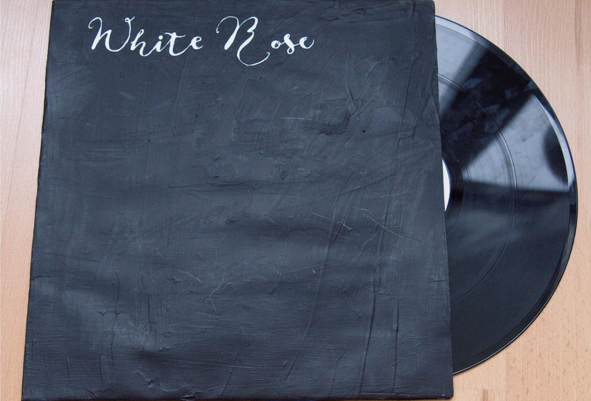
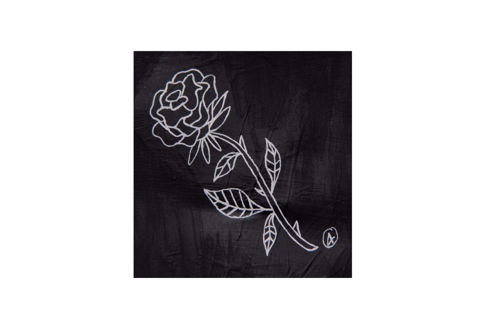
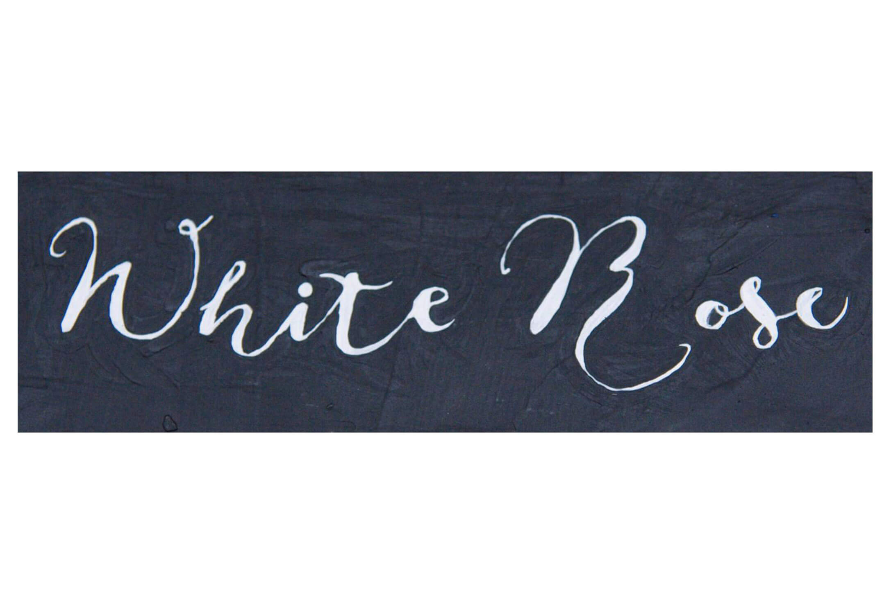
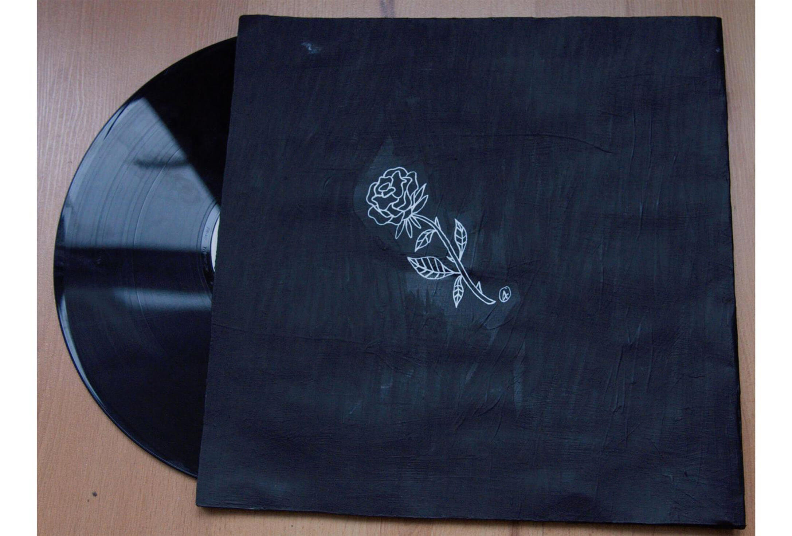
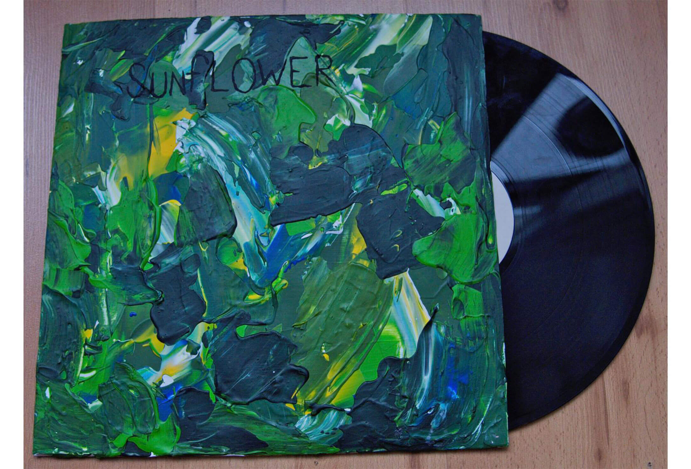
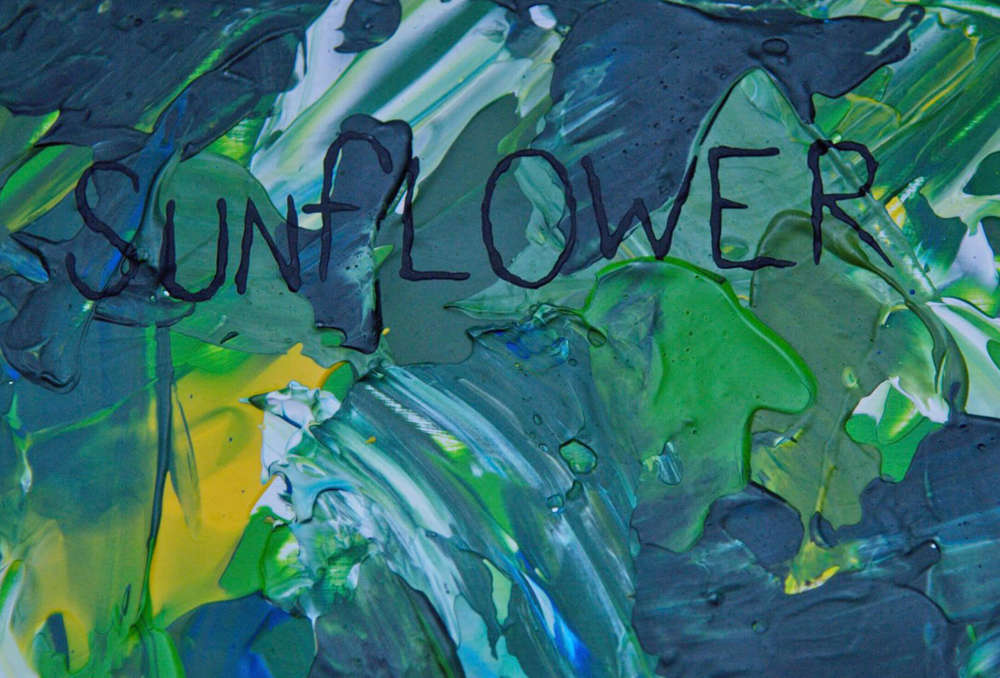
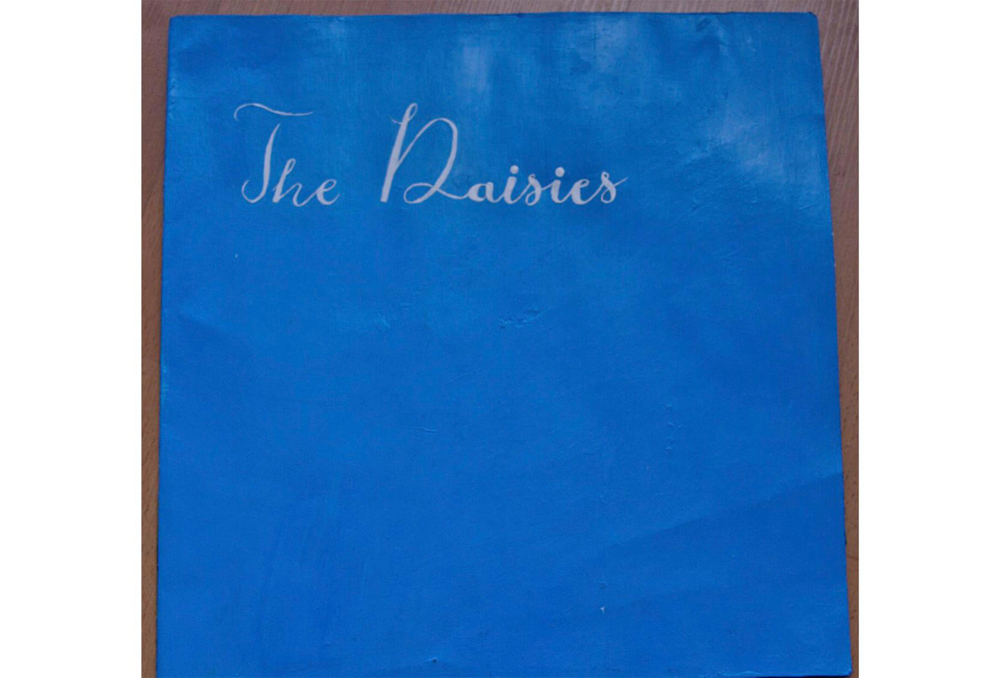
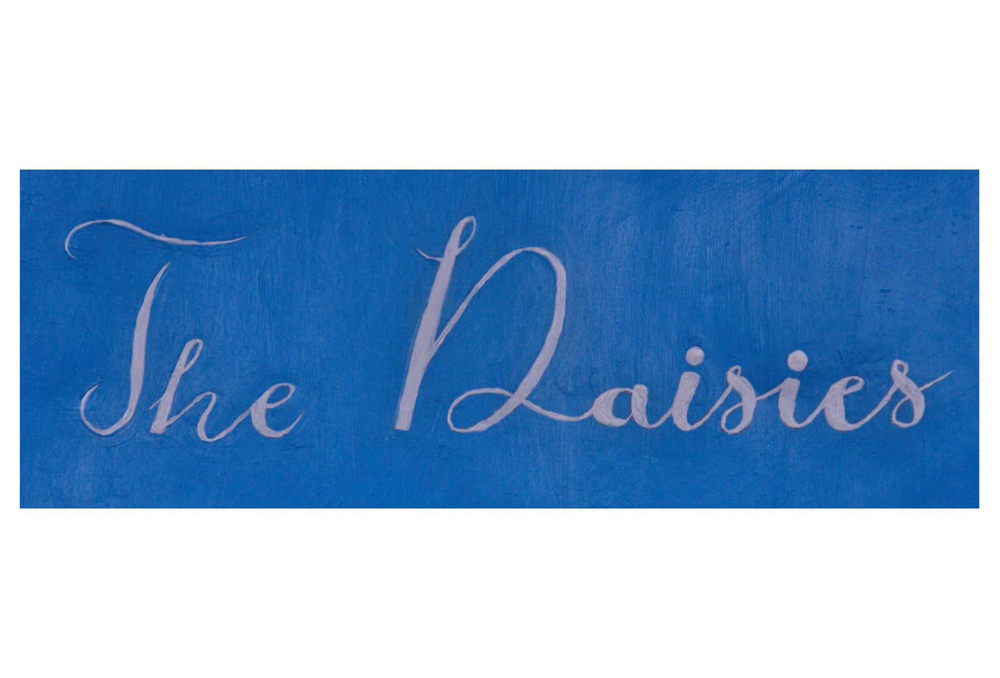
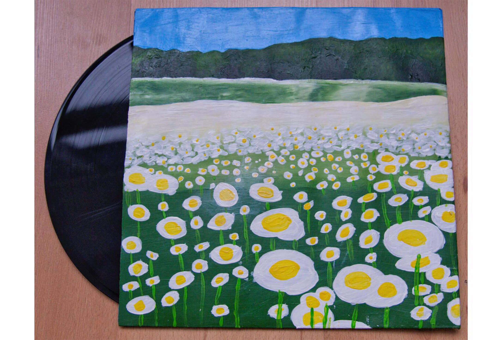
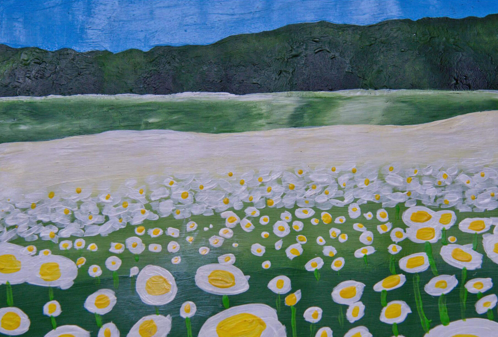

Mijn idee was om iets met muziek te doen want daar hou ik erg van en luister er altijd naar. Mijn vader had nog veel oude grammofoonplaten en daar raakte ik door geïnspireerd. Uiteindelijk heb ik 3 hoezen voor platen gemaakt. Ze waren als alleen karton nogal saai dus heb ik ze opnieuw vormgegeven en er iets op geschilderd. Ik heb uiteindelijk bedacht om bij elke hoes een verschillende muziek soort te doen, ik heb 3 muziek soorten uitgekozen en bij elke heb ik een bloem uitgezocht die ik er bij vond passen.
De muziek soorten plus bloem zijn:
Click here to talk with the artist!
         